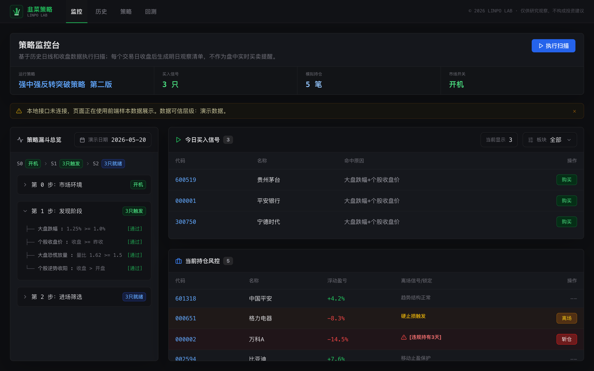
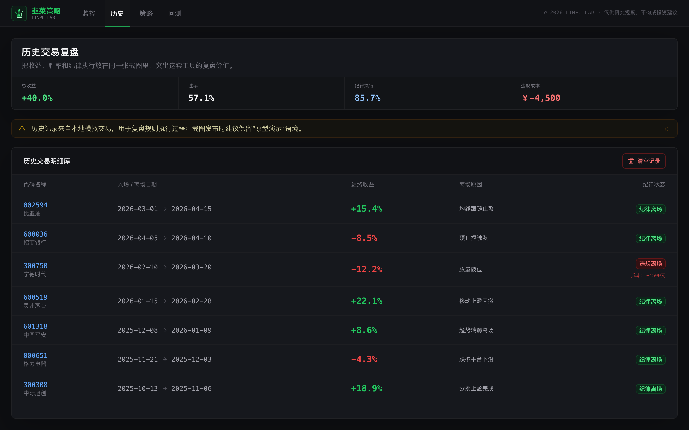
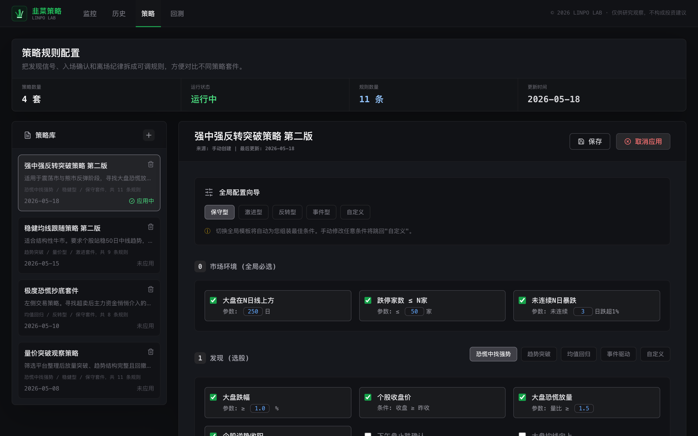
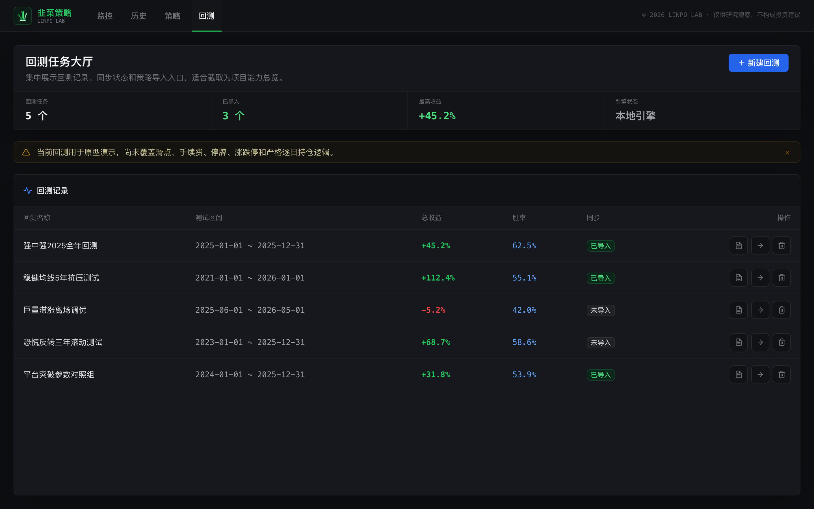

条件筛选、候选检查、模拟记录与历史回看闭环。
01 / 实验速览
先确认复盘流程是否成立，再讨论策略是否可信。
监控、历史、策略和回测入口已形成。
仅用于研究复盘，不执行账户操作。
当前本地版本的四张真实界面截图。
02 / 界面证据
四张新版界面按同一条复盘顺序展开。
截图证明流程和状态可见，不证明信号准确、数据实时或策略盈利。
监控台把策略漏斗、买入信号和持仓风控放在同一检查面
用户可以沿着市场环境、候选信号与模拟持仓检查每日状态，而不是只看到一个孤立结论。

历史页把收益、离场原因和纪律状态放在同一记录中
每次模拟交易都能按日期和结果回看，违规成本也被明确保留。

策略库把发现、确认与离场条件拆成可调规则
多套策略、全局模板和具体参数显式呈现，使规则来源能够被检查。

回测大厅集中展示任务、收益、胜率和导入状态
入口已经形成能力总览，但滑点、手续费和严格逐日持仓仍需继续补齐。

03 / 运行边界
流程可以运行，但数据和回测可信度仍需独立验证。
当前可以验证
监控、历史、规则配置和回测入口能否形成连续复盘。
运行依赖
公开展示版只读，完整配置、记录与数据保留在本地原型。行情和回测仍依赖外部数据，不接入真实账户。
当前不验证
不验证实时行情准确性、策略收益、严格回测和真实交易执行。
04 / 工作流程
五个动作组成一次完整的收盘复盘。
01 · 环境检查市场与前置条件。
02 · 筛选查看候选是否通过规则。
03 · 观察核对信号与模拟持仓。
04 · 记录保存动作与离场原因。
05 · 回看用历史和回测继续验证。
系统与数据决策
当前截图来自公开版本，但页面完整不代表策略可信。回测仍需补足成本、复权、停牌和逐日持仓规则。
05 / 实验结论
复盘路径已经成立，数据和回测可信度仍没有。
已成立
策略条件、候选、模拟动作和历史记录已经形成可检查的复盘语言。
仍薄弱
数据质量、成本模型、回放机制和长期样本仍不足以支持结果判断。